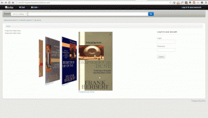

擴展 Koha
本章顯示以既有的組態選項新增強化及客製化的功能。
Amazon 為 Koha 圖書館的查詢程式
我們向 Amazon 購買大部份的東西，所以我已經找到簡潔的方法若圖書已經在我們的目錄內。
Greasemonkey & 會計適用的讀者程式：
幾個警示：
如同大部份的程式，這個也是設計與 Firefox 共用；我還沒有把它擴展至其他的瀏覽器。
我不是 JavaScript 程式設計師 – 這是別人的工作。祗改了幾行程式讓它與我的目錄共同工作。
視作品是否有 ISBN，所以電影、舊書等就不適用。
其他人曾加入各種花俏的東西：根據館藏狀態 (採購中、預約中等) 發送客製化訊息，… 祗要搜尋 Amazon + library 的 UserScripts 網站即可得知。供後續使用！
關鍵詞雲
除了傳統的標籤雲之外，Koha 還產生常用的主題雲。
將 Author/Subject Cloud cron job 用於說明此程序。此例行性工作排程送出其內容至檔案。
/home/koha/mylibrary/koharoot/koha-tmpl/cloud-author.html
/home/koha/yourlibrary/koharoot/koha-tmpl/cloud-subject.html
這意味著您可以為作者、集體作者、所有類型的主題、分類等生成雲。由於它適用於Zebar索引，因此即使在大型數據庫上也很快。標籤雲被發送到文件。圖書館網站管理員負責處理這些文件，以便將它們包含在 OPACMainUserBlock 中，或將它們包含到他們的圖書館 CMS 中。
有些圖書館甚至把檔案送網管掌控的 Samba 共享資料夾，將其整合入網頁之前還先清理它們。
最新題名下拉
通常我們想讓讀者能夠搜尋最新的館藏。在此例裡依館藏類型建置最新館藏的下拉選單。這些秘訣 (再加上若干變化) 可供館藏代碼或排架之用。
首先，Koha內 的所有連結都是永久性連結。把特定館藏類型依採訪日期排序並標記其 URL，下回再點選此網址就把最新的館藏列在前幾頁。
我寫上這些內容做為以後之用。就是搜尋我的 Koha 目錄裡的特定館藏類型並依採訪日期排序。
首要之事先寫一個 MySQL 敘述產生館藏類型清單 - 可以使用功能強大的 MySQL 時何必複製貼上呢？
select concat('<option value=\"mc-itype:', itemtype, '\">',description,'</option>') from itemtypes
以上的館藏類型表與其必要的 HTML 都很有用。接著匯出為 CSV 格式並在文字編輯器打開它再新增表格的其他部份。
<p><strong>New Items</strong></p>
<p><form name="searchform" method="get" action="/cgi-bin/koha/opac-search.pl">
<input name="idx" value="kw" type="hidden">
<input name="sort_by" value="acqdate_dsc" type="hidden">
<input name="do" value="OK" type="hidden">
<select name="limit" onchange="this.form.submit()">
<option>-- Please choose --</option>
<option value="mc-itype:BOOK">Book</option>
<option value="mc-itype:BOOKCD">Book on CD</option>
<option value="mc-itype:DVD">DVD</option>
<option value="mc-itype:LRG_PRINT">Large print book</option>
<option value="mc-itype:MAGAZINE">Magazine</option>
<option value="mc-itype:NEWSPAPER">Newspaper</option>
<option value="mc-itype:VIDEO">Videocassette</option>
</select>
</form>
</p>
現在，究竟什麼意思呢？重要的是：
首先從表單開始。
<p><form name="searchform" method="get" action="/cgi-bin/koha/opac-search.pl">
告知瀏覽器提取選定的值，並把它放在 http://YOURSITE/cgi-bin/koha/opac-search.pl 最後面。若想把它嵌入您的網頁 (不是 OPAC)，可把完整的 OPAC URL 置於此。
接著，有個隱藏值告知搜尋結果以採訪日期排序的降羃排序(最新的館藏在上面)：
<input name="sort_by" value="acqdate_dsc" type="hidden">
最後您可指定讓讀者搜尋的館藏類型。
<option value="mc-itype:BOOK">Book</option>
每個選項包括字串 “mc-itype:” 告知 Koha 搜尋各館藏類型。
全部就緒後就可以複製貼上表單至您的 OPAC 內。Farmington Public Libraries OPAC 左方有若干範例。
OPAC 使用的新題名封面
圖書館多半在其公共目錄頁面新增其他功能。可從其他服務取得 (多半需付費) 該等功能或者從 Koha 內 :ref:`啟用外掛 <#pluginsystem>`__ 並使用 封面外掛 係依照 Flipster 而來，一個 jQuery 的外掛。
安裝外掛之後，依照下面的步驟取得封面：
首先，新增封面的機制。讓外掛知道您的機制應包括的內容。每個報表祗需三個欄位；題名、書目號與國際標準書號。必須包括正確的國際標準書號，才能夠抓取到封面。英文封面的外掛中，我們最常用 Amazon 封面圖像，不過我相信以後可以建置抓取封面的組態檔讓我們從其他的來源抓取封面。
第二，我們需組態外掛。外掛組態是使用 YAML 的純文字區塊 (實際上，它是 JSON，YAML 的子集合) 儲存組態選項。在此例中看來像這樣：
- id: 42
selector: #coverflow
options:
style: coverflow
在上例裡，於 id 42 的外掛裡使用報表，並以其新增封面取代 id 為 “封面”。把選單直接交給 Flipster，支援 Flipster 的選項就能夠納入外掛中！事實上，除了傳統的封面外，還有 “carousel” 模式更精簡地處理封面。還可從多個選項裡，組態指定的封面。
儲存或更新外掛選項時，會產生自動儲存在 Koha 的 OpacUserJS 系統偏好內的 JavaScript 程式碼。以下是範例：
/* JS for Koha coverflow plugin
This JS was added automatically by installing the coverflow plugin
Please do not modify */$(document).ready(function(){$.getScript("/plugin/Koha/Plugin/Com/ByWaterSolutions/CoverFlow/jquery-flipster/src/js/jquery.flipster.min.js",function(data,textStatus,jqxhr){$("head").append("<link id='flipster-css' href='/plugin/Koha/Plugin/Com/ByWaterSolutions/CoverFlow/jquery-flipster/src/css/jquery.flipster.min.css' type='text/css' rel='stylesheet' />");$('#coverflow').load("/coverflow.pl?id=42",function(){var opt={'items':'.item','minfactor':15,'distribution':1.5,'scalethreshold':0,'staticbelowthreshold':false,'titleclass':'itemTitle','selectedclass':'selectedItem','scrollactive':true,'step':{'limit':4,'width':10,'scale':true}};$('#coverflow').flipster({style:'coverflow',});});});});
/* End of JS for Koha coverflow plugin */
為什麼要做這個？速度！載入頁面時不必每次產生相同的程式碼，產生一次後，就能重複使用。
仔細檢視程式碼，會發現它指向 “coverflow.pl” 腳本。此腳本包括外封面。需從 OPAC (我們不要關閉任何 XSS 攻擊警示) 近用它，我們需修改網頁伺服器組態供公共目錄使用並加入以下：
ScriptAlias /coverflow.pl "/var/lib/koha/mykoha/plugins/Koha/Plugin/Com/ByWaterSolutions/CoverFlow/coverflow.pl"
這段外掛讓我們從 OPAC 近用 coverflow.pl 腳本。此腳本提取報表資料並交給公共目錄產生封面。支援 Koha::Cache 快速載入封面！
最後一步是將選擇細目放在公共目錄中的某個位置。在這個例子中，我將以下內容放在顯示位置 OpacMainUserBlock 中（參見 最新消息工具）：
<span id="coverflow">Loading...</span>
置入後，祗需刷新您的 OPAC 頁面，就能夠有它，非常個人化的封面！不祗是在電腦螢幕上看起來很酷，在行動裝置上也極佳，觸控螢幕也可以！

按顏色編目和搜索
Koha 安裝的圖示集包括一組色塊。可以當成目錄與搜尋之用。本指南教您將 Koha 的館藏代碼變更為顏色以便使用它。
以下的 SQL 可用於批次控制 CCODE 的顏色容許值。更改它們就能夠用於另個容許值了：
insert into authorised_values (category, authorised_value, lib,
lib_opac, imageurl) values ('CCODE','000000','Black','','colors/000000.png');
insert into authorised_values (category, authorised_value, lib,
lib_opac, imageurl) values ('CCODE','66cc66','Bright Green','','colors/66cc66.png');
insert into authorised_values (category, authorised_value, lib,
lib_opac, imageurl) values ('CCODE','99cc33','Olive','','colors/99cc33.png');
insert into authorised_values (category, authorised_value, lib,
lib_opac, imageurl) values ('CCODE','3333cc','Dark Blue','','colors/3333cc.png');
insert into authorised_values (category, authorised_value, lib,
lib_opac, imageurl) values ('CCODE','006600' ,'Dark Green','','colors/006600.png');
insert into authorised_values (category, authorised_value, lib,
lib_opac, imageurl) values ('CCODE','6600cc','Plum','','colors/6600cc.png');
insert into authorised_values (category, authorised_value, lib,
lib_opac, imageurl) values ('CCODE','6666cc','Purple','','colors/6666cc.png');
insert into authorised_values (category, authorised_value, lib,
lib_opac, imageurl) values ('CCODE','9999cc','Light Purple','','colors/9999cc.png');
insert into authorised_values (category, authorised_value, lib,
lib_opac, imageurl) values ('CCODE','660000' ,'Burgundy','','colors/660000.png');
insert into authorised_values (category, authorised_value, lib,
lib_opac, imageurl) values ('CCODE','663333' ,'Brown','','colors/663333.png');
insert into authorised_values (category, authorised_value, lib,
lib_opac, imageurl) values ('CCODE','990000' ,'Red','','colors/990000.png');
insert into authorised_values (category, authorised_value, lib,
lib_opac, imageurl) values ('CCODE','996633' ,'Tan','','colors/996633.png');
insert into authorised_values (category, authorised_value, lib,
lib_opac, imageurl) values ('CCODE','999999' ,'Gray','','colors/999999.png');
insert into authorised_values (category, authorised_value, lib,
lib_opac, imageurl) values ('CCODE','cc66cc','Pink','','colors/cc66cc.png');
insert into authorised_values (category, authorised_value, lib,
lib_opac, imageurl) values ('CCODE','cc99cc','Bubble Gum','','colors/cc99cc.png');
insert into authorised_values (category, authorised_value, lib,
lib_opac, imageurl) values ('CCODE','cc3333' ,'Orange','','colors/cc3333.png');
insert into authorised_values (category, authorised_value, lib,
lib_opac, imageurl) values ('CCODE','cc6666' ,'Peach','','colors/cc6666.png');
insert into authorised_values (category, authorised_value, lib,
lib_opac, imageurl) values ('CCODE','cc9999' ,'Rose','','colors/cc9999.png');
insert into authorised_values (category, authorised_value, lib,
lib_opac, imageurl) values ('CCODE','cccc00' ,'Gold','','colors/cccc00.png');
insert into authorised_values (category, authorised_value, lib,
lib_opac, imageurl) values ('CCODE','ffff33' ,'Yellow','','colors/ffff33.png');
insert into authorised_values (category, authorised_value, lib,
lib_opac, imageurl) values ('CCODE','ffffcc','Cream','','colors/ffffcc.png');
insert into authorised_values (category, authorised_value, lib,
lib_opac, imageurl) values ('CCODE','ffffff','White','','colors/ffffff.png');
If you would like to choose the colors manually you can do that via the Authorized values administration area.

接下來，您需要 更新框架，以便 952$8（如果您使用收藏代碼）標籤顯示“顏色”。
就緒後就可以色塊編目館藏。
最後您可新增以下的 JQuery 至偏好把 ‘合集’ 標示為 ‘彩色’
$(document).ready(function(){
$("#advsearch-tab-ccode a:contains('Collection')").text("Color");
$("#holdings th:contains('Collection')").text("Color");
});
$(document).ready(function(){
$("#advsearch-tab-ccode a:contains('Collection')").text("Color");
$('#item_ccode').text("Color");
});
在您的網站搜尋 Koha
通常需要將 Koha 的搜尋盒納入您的網站，祗需將以下的程式碼置入您的圖書館網站，並更新其中的目錄網址即可。
<form name="searchform" method="get" action="http://YOURCATLOG/cgi-bin/koha/opac-search.pl" id="searchform">
<input id="transl1" name="q" type="text"><p>
<select name="idx" id="masthead_search">
<option value="kw">Keyword</option>
<option value="ti">Title</option>
<option value="au">Author</option>
<option value="su">Subject</option>
<option value="nb">ISBN</option>
<option value="se">Series</option>
<option value="callnum">Call Number</option>
</select>
<input value="Search" id="searchsubmit" type="submit">
</p></form>